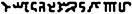

Zonai Script
Zonai Script
from Nintendo's Tears of the Kingdom
This website is a collection of samples and notes on the use of the Zonai
writing system in Tears of the Kingdom.
The game has many signs written in fictional alphabets: Gerudo, Hylian, and
Sheikah. These are all known to be substitutions for the English alphabet,
and were seen in Breath of the Wild.
Tears of the Kingdom introduces a new script for the Zonai (ゾナウ) people.
Structure
Zonai script is written using only 14 symbols:
B C D H J L M N R S T U W Y
The text is usually written in vertical columns, but is sometimes written in
rings. Less commonly, it is written in rows (often in rings wrapping around a
column or ball).
I suspect that circular text is not written in a consistent direction, and I
have annotated each sample with the direction I think it might be read in.
Analysis of Circular Writing Direction
For example, consider the circular writing on the back of the Zonai stake:
If you read it clockwise, you get HSLJ.
If you read it counter-clockwise, you get HJLS.
Now consider some of the other zonai devices:
These all have the same string HJL(S), which matches
the counter-clockwise reading.
However, other circular writing, like that in the portals in front of
shrines, appears to be the opposite:
Read clockwise, it almost matches the vertical text found in the pillars
surrounding the inner chamber within a shrine of light
(HNJBSLM... vs HNDBSLM):
The text has a visual similarity to CJK logographs, especially
oracle bone script / small seal script.
| Zonai | Small Seal Script | Modern
|
|---|
| W
| 
| 笑
|
| M
| 
| 京
|
The game uses a handful of other
symbols in the Zonai "language", such as those associated with the summonable
champions, but they don't appear in larger passages. These are explicitly
Japanese kanji. For example, the Fire Sage symbol is a variant of "炎",
meaning "flames".
Previous installments in the Zelda franchise have created Hylian scripts
which were simple ciphers for English or Japanese text. Recent games (including
Breath of the Wild's Sheikah script) have been English ciphers (although
some text was written in romanized Japanese using the English alphabet), but
several factors point to this script rather being a cipher for Japanese:
- The script has a basic resemblance to old Chinese/Japanese writing
- Like classical Japanese, the script is written in columns
- 14 symbols is far too few to write intelligible English text
- Japanese is normally written in a syllabary of 45 symbols formed from
5 vowels and 9 consonants (plus several voicing marks)
- Using voicing marks is a convention in modern Japanese; texts
older than around 1850 wouldn't have used them regularly, making
it appropriate that an "ancient" language based on Japanese
wouldn't use them.
Observations
The text in the game is frequently reused in many different places. More
interestingly, sometimes text has some slight variations to it.
For example, the string HNDBSLM appears in many
places, notably on the columns surrounding the door to the inner chamber
of a Shrine of Line.
This string also appears written bottom to top in the Water Temple, on
the main pipes that dump water. However, of note, it is not a
simple reversal, but a reversal in chunks of one or two letters:
| Shrine of Light
| Water Temple
|
| H
| (1)
| L
| (4)
|
| N
| M
| D
| (2)
| B
| (3)
|
| B
| (3)
| S
| S
| D
| (2)
|
| L
| (4)
| H
| (1)
|
| M
| N
| | |
This suggests some kind of grouping of the characters. If they encode
romaji, possibly at the mora or kana level.
A similar, though quite different, kind of repetition with reversals can
be found on the door exiting the Temple of Time.
Here, chunks of 1, 2, or 3 letters are reversed, or occassionally one
letter is replaced.
| Left Door
| Right Door
|
| N
| (1)
| N
| (1)
|
| M
| (2L)
| S
| (2R)
|
| T
| R
| C
| C
| S
| M
| T
| R
| M
| (3)
| S
| (3')
|
| S
| M
| L
| (4)
| L
| (4)
|
| W
| (5)
| D
| (5')
|
| C
| C
| D
| W
| N
| (6)
| N
| (6)
|
| H
| (7)
| J
| (7')
|
| J
| H
| S
| (8L)
| M
| (8R)
|
| H
| (9)
| J
| (9')
|
| J
| H
| T
| (10)
| R
| (10')
|
| Y
| Y
| R
| T
| D
| (11L)
| W
| (11R)
|
| C
| (12)
| C
| (12)
| | | | | | | | | | | |
Red Herrings
Zonai Pattern
There is a pattern which appears in many Zonai ruins throughout the
world that looks something like this:

Although it often appears near Zonai text and looks like letters, this is
not text. Every occurrence of it is exactly the same decorative
sequence.
Ring Ruins Tablets
The tablets in the Ring Ruins are large corpuses of Zonai text.
Unfortunately, they appear to be completely random: the distribution of
letters is as-uniform-as-possible.
Therefore, it's not really possible that they form a substitution cipher
for any language. I think it's best to ignore their contents until other
samples are understood.
Shrine of Light Voices
When a Shrine of Light "speaks" to Link, words appear on screen, with
ghostly Zonai letters appearing behind them.
Those letters are randomly generated. They are not consistent between
different players visiting the same shrines, and they are not consistent
between shrines.
Alphabet Use
Many, many examples of Zonai text use only 7 of the 14 letters.
For example, the text that appears on the doors and walls of the
Temple of Time and the Forgotten Temple use only
BDHLMNS
(they never use CJRTUWY).
This might suggest that these samples do not mean anything.
Letter Frequency
Some of the "letters" appear much more than others:
Bigram Frequency
Some combinations of letters appear much more frequently.
There is not a clear resemblance to romaji's bigram frequencies, but
because there is so little sample data, and it likely contains many
transcription errors or oddities, it is hard to compare.
A less plausible explanation may be that the text is not an alphabet,
but an abjad; there
are also 14 consonants in Japanese:
(K, G; S, Z; T, D; H, B, P; R, M, N, Y, W).
However, this would be nearly unreadable, so I don't suspect this is
the case. Many grammatical functions are indicated solely using vowels,
which makes this a terribly unclear way to write Japanese.
I do think that some of the text in the game is nonsense; in
particular, the stone tablets in the Ring Ruins should be a trove of
Zonai text, since each tablet contains 54 letters.
However, the letter distribution in them is as-uniform-as-possible, which
makes me think they are random rather than actual text. It's possible
that other garbage samples exist in the game, but since many of them
are so short, it is hard to separate them.
Trigram Frequency
Certain "phrases" are repeated between many different texts.
Word Starts
Due to the relatively rigid structure of Japanese syllables, certain
letters are much more likely to begin a sentence or phrase.
This may be a useful starting point for identifying vowels and
consonants.
Japanese sample text
Japanese is normally written using two kinds of characters:
- kanji: There are around two thousand regularly used kanji.
Their pronunciation changes completely depending on context.
Each one generally has a "meaning" that is used in one or more
words.
For example, the kanji 食 means "food" or "eat":
- 食べる:
to eat
- 食堂:
cafeteria
- kana: There are 50 kana symbols, in two forms (hiragana and
katakana).
Individual kana are purely phonetic and do not mean anything; they
have essentially fixed pronunciations.
Each kana represents a "syllable" combinining an initial consonant
followed by a vowel.
For example, the hiragana ほ represents the sound "ho".
I see no practical way to encode kanji using only 14 letters, so I
presume any cipher is purely phonetic.
Japanese can be "spelled" using these 50 kana. Below is a sample of
Japanese text taken from the Nintendo website, and its conversion to
kana.
https://www.nintendo.co.jp/zelda/totk/character/index.html
城は宙へと浮かび上がり、空から謎の遺跡が降り注ぐ。
ハイラルは突如として、”天変地異”に見舞われた。
主人公リンクは、果てなき冒険に再び身を投じる。
かつてハイラルを救った勇者。
右手の力を駆使して、ハイラルの異変に立ち向かう。
聡明で好奇心旺盛なハイラル王国の姫君。
ハイラルを襲う天変地異に巻き込まれてしまう。
女性ばかりのゲルド族において、
百年に一度だけ生まれる男として生を受ける。
ハイラルを襲った天変地異と何か関係があるようだが・・・
しろはちゅうへとうかびあがり、そらからなぞのいせきがふりそそぐ。
ハイラルはとつじょとして、”てんぺんちい”にみまわれた。
しゅじんこうリンクは、はてなきぼうけんにふたたびみをとうじる。
かつてハイラルをすくったゆうしゃ。
みぎてのちからをくしして、ハイラルのいへんにたちむかう。
そうめいでこうきしんおうせいなハイラルおうこくのひめぎみ。
ハイラルをおそうてんぺんちいにまきこまれてしまう。
じょせいばかりのゲルドぞくにおいて、
ひゃくねんにいちどだけうまれるおとことしてせいをうける。
ハイラルをおそったてんぺんちいとなにかかんけいがあるようだが・・・
Because there are only 14 zonai symbols, they could not possibly encode
the 50 kana, like what was done in the Ocarina of Time script.
Instead, I suspect the Zonai script is more likely based on a proper
alphabet, such as the transliteration of Japanese into the Latin
alphabet.
There are several ways to transliterate Japanese text into the Latin
alphabet (referred to as "romaji", for Roman-characters). Here are the
choices I made for the below transliteration:
- Grammatical particles are transliterated as they are written, not as
they are pronounced
(so を is "wo" not "o" and は is "ha" not "wa")
- Long vowels are transliterated as the two vowels
(so おう is "ou" not "o" or "oh" or "ō")
- Irregularly pronounced consonants are spelled regularly
(so ち is "ti" rather than "chi", つ is "tu" rather than "tu",
しゅ is "syu" rather than "shu", ふ is "hu" rather than "fu")
- Small っ is written with a double consonant
(so 救った is written "sukutta")
siro ha tyuu he to ukabiagari, sora kara nazo no iseki ga hurisosogu.
hairaru ha totujo tosite, tenpentii ni mimawareta.
syujinkou rinku ha, hatenaki bouken ni hutatabi mi wo toujiru.
katute hairaru wo sukutta yuusya.
migite no tikara wo kusisite, hairaru no ihen ni tatimukau.
soumei de koukisin ousei na hairaru oukoku no himegimi.
hairaru wo soutenpentii ni makikomaretesimau.
josei bakari no gerudozoku nioite,
hyakunen ni itido dake umareru otokotosite sei wo ukeru.
hairaru wo osotta tenpentii to nanika kankei ga aru you daga.
However, many of these features do not appear to be used by Zonai text.
- Double letters are extremely rare, so it's unlikely 救った would be
spelled as "sukutta", because the small っ is very common in
Japanese.
- Similarly, I removed double vowels like "ii" and "uu", but not
"ou" or "ei".
- Irregular spellings are not used, because there aren't enough
letters to include a "c" for "chi" or "f" for "fu"
- Voicing is probably not indicated, because there aren't enough
letters to distinguish d and t, s and z and j, h and b and p,
k and g, etc.
- This is the case with the "Old Hylian" script from the
Ocarina of Time.
- I chose to transliterate "small kana" Y- sounds without the
preceding "i", and "small tsu" the same as a regular "tu", so a
string like キャット ("kyatto") would become "kyatuto".
Below is the result of these operations. This text is what is used to
generate the unigram and bigram tables for Japanese romaji above.